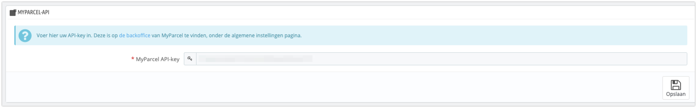
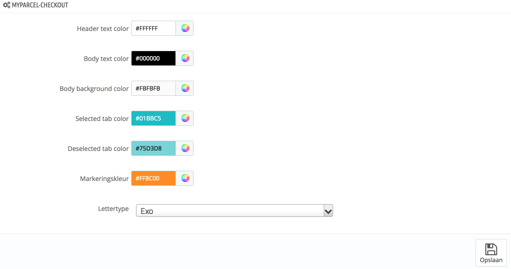
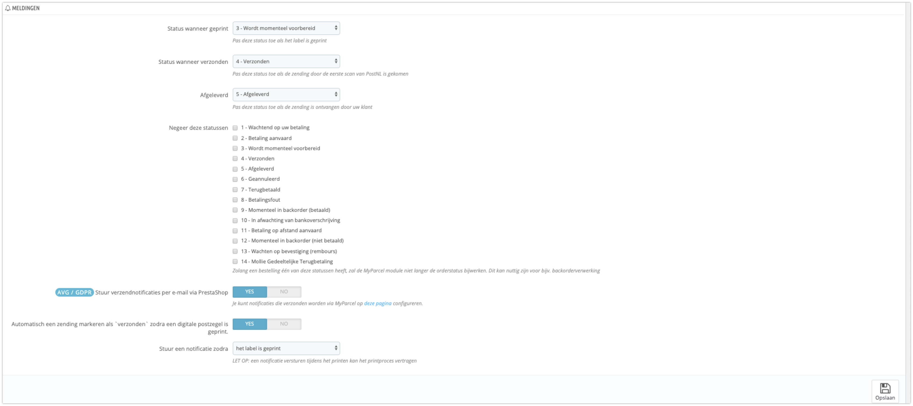
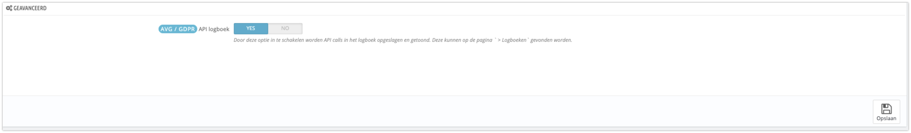
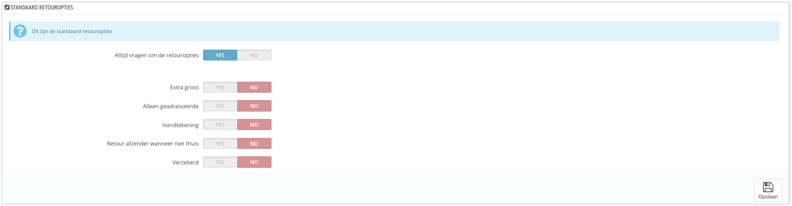
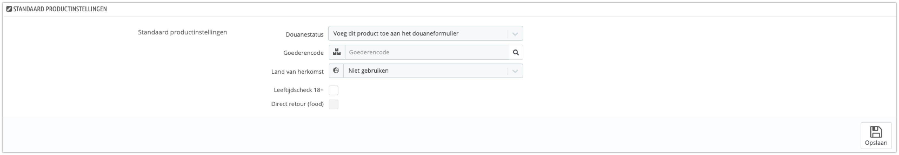
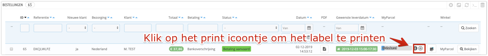
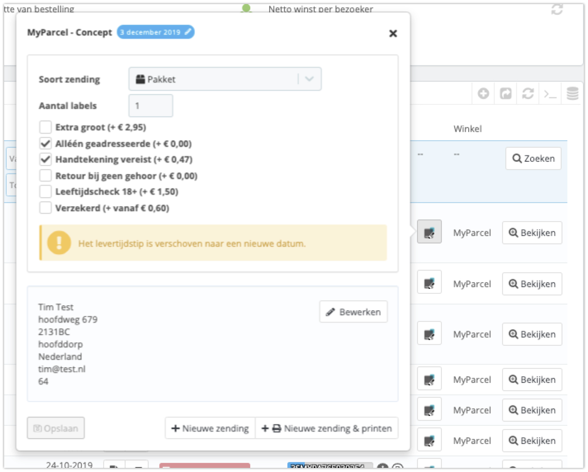

Inleiding
In deze handleiding laten wij zien hoe jij de MyParcel plug-in kunt installeren in jouw PrestaShop omgeving. Vervolgens geven wij een instructie van het gebruik van de plug-in.
De installatie en het gebruik van de koppeling wordt jou kosteloos aangeboden door MyParcel. Wij helpen jou graag met vragen over het gebruik van de plug-in. Omdat PrestaShop een open source platform is, kan het zijn dat de MyParcel plug-in conflicteert met reeds geïnstalleerde plug-ins.
De MyParcel plugin wordt op een juiste werking getest in een standaard PrestaShop omgeving. Vooral het gebruik van gemodificeerde check-out modules en 3th party shipping modules kan conflicten geven met de MyParcel module.
De in de vensters getoonde prijzen zijn slechts als voorbeeld ingesteld en wijken af van de werkelijke tarieven. Voor de juiste prijzen kun jij de tarieven in jouw account raadplegen.
Mocht je problemen ondervinden met de installatie, raden wij je aan contact op te nemen met jouw webshop bouwer.
Plugins van derden die we ondersteunen
Let op: Wij leveren geen support op deze plugins!
Eventueel een afsluiter van de inleiding
1. Installatie
Dit hoofdstuk omschrijft de installatie van de MyParcel PrestaShop Plug-in met gebruik van de knop “Nieuwe Module toevoegen”.
Wij adviseren de installatie altijd eerst op een testomgeving uit te voeren en een back-up te maken van jouw webshop voor je met de plugin in de live webshop gaat.
- Download het MyParcel PrestaShop Plug-in.zip bestand
1.1 Via het CMS
- Ga naar Modules → “Modules Manager” en klik vervolgens op “Upload een Module” en sleep of selecteer het bestand.
1.2 Testen
Met de plugin van MyParcel worden bepaalde bezorgopties toegevoegd aan jouw checkout. Welke bezorgopties je jouw klant aan wil bieden kun je instellen in de configuratie van de MyParcel plug-in. Wij adviseren dan ook om na het installeren van de plugin jouw bestelproces goed door te lopen of alles naar wens is.
Ook omdat niet alle checkouts in PrestaShop hetzelfde werken is het nogmaals goed om te kijken of alles naar wens staat. Staat alles op de juiste plaats en is het goed uitgelijnd? Onze tip is om hier naar te kijken voordat jouw klanten dit gebruiken.
1.3 Veelgestelde vragen over de installatie
Zet hier de veel gestelde vragen omtrent de installatie
2. Configuratie
- Ga in PrestaShop naar Modules → Modules Manager → MyParcel → Configureer
2.1 Instellingen
API instellingen
Om verbinding te kunnen maken met jouw MyParcel account is het noodzakelijk om hier jouw API-key in te vullen.
Als je ingelogd bent in jouw MyParcel account dan kun je deze vinden in het menu Shopinstellingen → Algemeen.
MyParcel checkout design
Alle kleuren van de checkout zijn hier aan te passen, naar de gewenste kleuren. Naast de kleuren, is het ook mogelijk om het lettertype aan te passen.
Labels
In het kenmerk van een label heb jij de keuze om er een tekst in te zetten, of om een order ID of Order referentie mee te geven om later makkelijker op te zoeken welke order bij welk pakket hoort.
Bij de keuze voor een standaardprinter gaat het systeem er van uit dat er een A4 (laser)printer gebruikt wordt die 4 A6 labels op één vel uitprint. Je kunt ook de keuze maken voor een labelprinter (moet wel geschikt zijn voor A6 labels) om jouw verzendlabels uit te printen.
Meldingen
Geavanceerd
2.2 Standaard verzendinstellingen
Standaard concept
Bij de concepten is het mogelijk om aan te geven wat jouw standaard verzendopties zijn, voor jouw pakket zendingen naar een Nederlands adres. Je kunt hier kiezen voor extra groot formaat, alleen huisadres, handtekening voor ontvangst, retour bij geen gehoor en verzekerd verzenden.
Jouw zendingen krijgen hiermee standaard de verzendoptie mee wanneer je deze exporteert. De opties die je hier aangeeft, kunnen bij het exporteren altijd nog per zending aangepast worden.
Standaard retour
Standaard product
Gegevens
Om te zorgen dat het telefoonnummer en e-mailadres mee wordt ge-exporteert naar MyParcel kun jij dit op “Aan” zetten. Het e-mailadres is noodzakelijk als jij de Track&Trace e-mail via het MyParcel systeem wil laten versturen. Dit is vooral handig als jij internationaal pakketten verzend. Bijvoorbeeld de e-mail voor Belgische klanten is tweetalig uitgevoerd, zodat een een klant uit Wallonië ook een Franstalig gedeelte krijgt met de noodzakelijke Track&Trace informatie.
In een aantal landen zijn de afstanden zodanig dat de pakketbezorger eerst naar de ge-adresseerde opbelt of men thuis is. Het telefoonnummer wordt dan in de landen die van toepassing zijn op het label afgedrukt.
Bezorgopties voor checkout

De overzichtspagina laat alle vervoerders zien die jij door middel van het instellen van de zones, landen, en vervoerders hebt aangemaakt. Wat hierbij een belangrijk aandachtspunt is, dat behalve Postkantoren in Nederland en België de rest van de opties eigenlijk alleen voor Nederlandse adressen gelden. Buiten Nederland kun jij geen opties toevoegen aan een pakket. Wat wel belangrijk kan zijn is dat jij voor Belgische adressen de afhaallocaties kunt activeren door Postkantoren op "Ja" te zetten.

- Brievenbuspakje: Als jij deze instelling op “Ja” zet, verdwijnen alle bezorgopties. Een brievenbuspakje is een zending waarop geen opties mogelijk zijn. Voordeel is dat de klant niet thuis hoeft te blijven of naar een servicepunt moet om het op te halen. Het past in de brievenbus, en komt dus nooit bij de buren terecht. Het nadeel is dat er een gewichtsbeperking van 2000 gram is, dat er geen verzekering op mogelijk is, en dat de Track&Trace informatie zeer summier is.
- Aantal dagen voorruit tonen: Met deze instelling kun jij de klant een bezorgdag laten kiezen. Voordeel is dat de klant de dag kan kiezen waarop er iemand thuis is om het pakket in ontvangst te nemen. Nadeel is dat jij als webshopwinkelier er zelf op moet letten wanneer het moment gekomen is om het pakket bij PostNL af te geven. Dus zorg jij ervoor dat jij meerdere voorraadlocaties inricht waar de gereedgemaakte zendingen op volgorde van verzenddag klaar liggen om af te geven bij PostNL.
- Afleververtraging: Het kan voorkomen dat jouw product nog geconfigureerd of afgesteld moet worden voordat het verzonden kan worden. Met deze instelling kun jij 1 of meerdere dagen vertraging instellen. Het nadeel is dat dit voor alle zendingen geldt en er geen uitzondering per product gemaakt kan worden.
- Ochtend en avondlevering: Ochtendlevering heeft een behoorlijke toeslag maar kan belangrijk zijn voor bijvoorbeeld technische vervangingsonderdelen die beslist in de ochtend geleverd moeten worden. Avondlevering is een veel aangeboden optie die veel webwinkel klanten hogelijk waarderen in de checkout. De extra kosten zijn gering, en de meerwaarde groot.
- Handtekening voor ontvangst: Er moet sowieso een handtekening voor ontvangst gezet worden door degene die het pakket aanneemt (dus ook een huisgenoot of buurman). Afgifte alleen aan de geadresseerde zonder handtekening (dus niet bij de buren). En dan nog de combinatie van geadresseerde die ook nog moet tekenen. Vooral bij nieuwsgierige buren is de optie “toeslag voor alleen de geadresseerde” een goede keuze.
- Postkantoren, PostNL Servicepunten: PakjeGemak locaties, en enkele pakketautomaten (o.a. in Almere): Voor de keuze zijn er twee mogelijkheden. De reguliere afhaaltijden variërend per locatie gemiddeld vanaf 15 of 16 uur af te halen. Of de combinatie extra vroeg afhalen bij een aantal geselecteerde PostNL Business Points. Afhankelijk van de locatie van de geadresseerde zal de keuze automatisch in de checkout beschikbaar zijn.
Als jij de juiste instellingen hebt gemaakt hoort de check-out er voor jouw klanten er ongeveer volgens bovenstaand voorbeeld uit te zien. In dit geval kan de klant kiezen voor een bepaalde afleverdag, Extra vroeg bezorgen, overdag bezorgen, in de avond bezorgen, afhalen bij een PostNL servicepunt, extra vroeg ophalen bij een PostNL servicepunt, en niet bij de buren en handtekening voor ontvangst.
Cut-off tijden, uitzonderingen en verzenddagen instellen

In dit gedeelte kun jij instellen op welk moment jij de deur op slot gooit voor de zendingen die diezelfde dag weggebracht gaan worden. Dus voor half vier besteld, dezelfde dag verzonden. Ook kun jij onderaan aangeven op welke dagen jij geen pakketten wil of kunt versturen (feestdagen en speciale dagen).
2.3 Pagina 3
Beschrijf alle opties op pagina 3.
2.4 Pagina 4
Beschrijf alle opties op pagina 4.
2.5 Veelgestelde vragen over de configuratie
Het instellen van zones en landen
Via het menu onderdeel “Internationaal” > “Locaties” kun jij de zones instellen met daarin de landen die onder die zone vallen. Een zone kan bijvoorbeeld meerdere landen bevatten die jij dezelfde verzendprijs wil geven. (dat hoeft dus niet de prijs te zijn die door MyParcel wordt berekend). Jij wil bijvoorbeeld meer Belgische klanten krijgen, dus biedt jij een aantrekkelijke prijs aan voor de verzending van jouw producten, gelijk aan het bijvoorbeeld het tarief voor Nederland.
In de standaard configuratie staan de zones van complete werelddelen. Jij zal dus nieuwe zones moeten toevoegen om per land een vervoerder te kunnen toevoegen.
Als de zones met de bijbehorende landen zijn aangemaakt, kun jij verder met per zone een “Vervoerder” aan te maken. Op die manier kiest Prestashop de juiste prijs bij de juiste vervoerders.

Bovenstaand venster geeft de standaard zones aan die Prestashop als default instelling weergeeft.

als jij de button "Nieuwe zone toevoegen" aanklikt krijg je bovenstaand scherm waar een naam van de zone ingevuld moet worden.

Als je op het scherm landen klikt en jij kiest Duitsland, zie jij dat Duitsland onder de zone Europa valt. Voor Duitsland willen wij een vervoerder instellen die alleen voor Duitse klanten een bepaalde prijs laat zien in de checkout.

Voor Duitsland hebben wij een aparte zone aangemaakt die wij "Pakket Duitsland" hebben genoemd.

In het tabblad landen zien wij dat het land Duitsland is toegewezen aan de zone "Pakket Duitsland".
Het instellen van de “Vervoerders”
Als eerste ga jij bepalen welke verzendmethodes (vervoerders) jij wil gebruiken om de producten bij de klant te krijgen.
Dit is afhankelijk van verschillende parameters. Deze zijn:
- Vanuit welke landen kan men bestellen
- Voor Nederland: welke soort zending wil ik gebruiken (pakket en/of brievenbuspakket).
- Wil ik voor Nederland en België ook ophaallocaties aanbieden
- Wil ik dat klanten een product kunnen ophalen in de fysieke winkel of magazijn
- Welke bezorg opties wil ik aan Nederlandse klanten aanbieden (avondlevering, niet bij de buren, handtekening voor ontvangst etc….)
Niet onbelangrijk is om ook te denken aan de prijzen die jij aan jouw klant wil doorberekenen. De bedragen van de opties moet men los zien van het bedrag wat er wordt doorberekend door MyParcel. Het aanbieden van gratis avondlevering kan het verschil maken tussen jou en de concurrent om de klant voor jouw webshop en producten te laten kiezen.

Hierboven zie je een overzicht van de vervoerders die als voorbeeld in Prestashop aangemaakt kunnen worden. Jij gaat nu een vervoerder voor pakketten aanmaken die in de zone "Pakket Nederland" gaat vallen.
Bij de algemene instellingen kun jij de vervoerder een naam geven, en bij de transitietijd eventueel een verwerkingsboodschap zetten.

Bij bovenstaand scherm geef jij de prijs in bij de zone die er voor deze vervoerder hebt aangemaakt.

Bij bovenstaand scherm geef jij de pakketafmetingen en het maximum totale pakketgewicht in.

Bovenstaand scherm geeft een overzicht van alle instellingen voor deze vervoerder zijn gemaakt.
3. Gebruik plugin
3.1 Aanmaken van één verzendlabel
Ga naar het bestellingen overzicht in jouw Prestashop omgeving.
Via het MyParcel icoontje kun je een zending aanmaken.
Via het print icoontje kun je een label printen
 Op bovenstaande afbeelding is het venster zichtbaar na het indrukken van de MyParcel button. In dit venster kun jij de bezorgopties nog wijzigen van een specifieke bestelling voordat de zending naar MyParcel geëxporteerd wordt. Het zou bijvoorbeeld wenselijk kunnen zijn om de zending alsnog te verzekeren. Klik daarna op Nieuwe zending en de order wordt geëxporteerd.
3.2 Aanmaken meerdere verzendlabels
-
Vink de gewenste bestellingen aan, en kies met de knop bulkacties “Exporteren”. Op dat moment worden alle data van de order naar MyParcel verstuurd en komt deze zending binnen met de status “Concept”. Het voordeel van een concept zending is, dat jij alle opties nog kunt veranderen, en ook nog correcties op de NAW gegevens kunt uitvoeren.
Op het moment dat jij in de MyParcel verzendomgeving de labels uitprint worden jouw zendingen aangemeld bij PostNL en krijg jij na een korte tijd een barcode. Deze barcode wordt daarna ook nog teruggekoppeld naar de Prestashop inclusief de status van de zending. -
Vink de gewenste bestellingen in Prestashop aan, en kies uit de “bulkacties”, “Exporteren en Printen”. Er verschijnt een print scherm en er wordt een PDF bestand gegenereerd. Dit PDF bestand kun jij daarna uitprinten. De zending wordt met deze combi actie gelijk bij PostNL aangemeld en is niet meer te wijzigen.
Bij beide acties kan het voorkomen dat een zending een foutmelding geeft, en dat er geen export uitgevoerd wordt. Bij een foutmelding is het verstandig om eerst de adresgegevens te controleren omdat het meestal een fout in een NAW gegevens betreft. Vooral het veld huisnummer toevoeging geeft nog wel eens een probleem bij het gebruik van meer dan 4 karakters

In bovenstaand voorbeeld zie jij dat een klant een bezorgdatum heeft gekozen en is het menu bulkacties zichtbaar.

Door op de i (informatie) button te klikken kun jij de huidige status van een verzonden order checken. In dit geval is de order aangemeld bij PostNL maar nog niet aangeboden en nog niet gescand.

Als jij op de printer button klikt verschijnt er een venster met daarin de mogelijkheid om de startpositie te kiezen voor het te printen label. Ook is het mogelijk om over te schakelen naar een (mits aanwezig) A6 labelprinter.

In het orderdetail scherm kun jij ook nog aanpassingen maken in de soort verzending of voordat jij de order exporteert een adres correctie toepassen.
3.3 Aanpassen van een enkele zending
Beschrijf hier hoe je pakket- en verzendopties aanpast.
3.4 Checkout
Beschrijf hier hoe de consument de checkout gebruikt.
3.5 Veelgestelde vragen over het gebruik van de plugin
Zet hier de veel gestelde vragen omtrent het gebruik van de plugin.